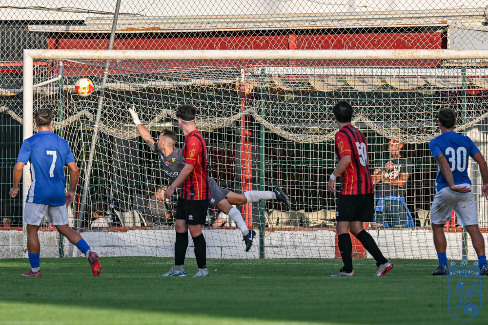
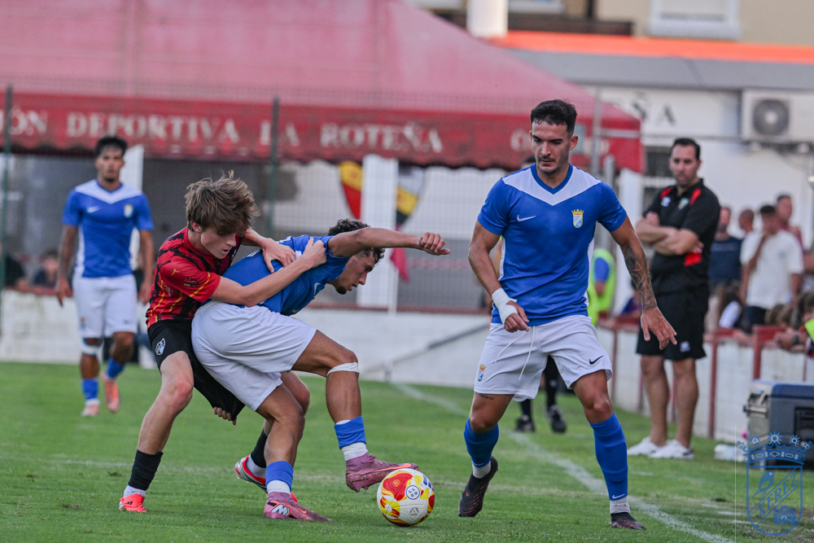
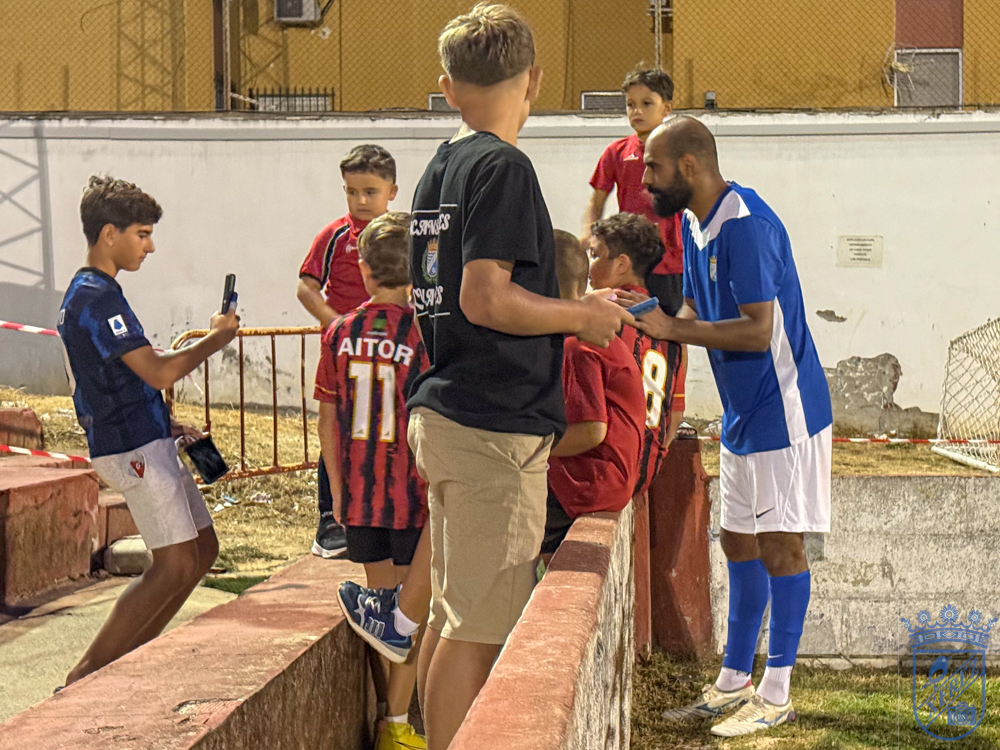

Goleada del Xerez en Rota, empañado por el susto de Salas
 Xerez CD
Xerez CDFali 24'
David Lachica 40'
Óscar Lorenzo 50'
Manu 60'
Leo 75'

Foto: PuroXerecismoLos azulinos firman media docena de goles en el campo de la UD Roteña durante el penúltimo ensayo veraniego, si bien la jornada quedará marcada por el golpe en la cabeza que obligó a trasladar en ambulancia al lateral izquierdo
El duelo dejó poco margen para el análisis táctico: fue un dominio absoluto de principio a fin. El Xerez CD certificó una goleada clara en el Manuel Bernal, ante una UD Roteña —equipo de Segunda Andaluza— que, además, saltó al terreno de juego con varias ausencias por compromisos de trabajo. El abultado 0-6 acabó, sin embargo, pasando a un segundo plano tras el susto vivido cerca del final, cuando Salas se llevó un golpe en la cabeza y tuvo que ser atendido y trasladado en ambulancia hasta un centro sanitario.
Rotación y otra exhibición ofensiva
Molist quiso repartir carga de minutos, dando descanso a Rubén Mesa, que venía de completar los noventa minutos en los dos amistosos previos frente al Real Jaén y al Juventud Torremolinos. En el once de salida, David Lachica actuó como pareja de central junto a Manu Galán, con Chacartegui y Guille Campos ocupando ambos costados. Fali se situó por delante de la defensa, acompañado en ataque por Mario Peregrina y Ganfornina, con Zelu buscando espacios por dentro y cediendo el carril zurdo a Chacartegui. Jaime Fernández se mantuvo volcado en la banda diestra, y como referencia arriba jugó Juan Ghia, futbolista que se encuentra a prueba en la disciplina azulina.
Las intenciones del Xerez CD quedaron claras desde el pitido inicial. Apenas comenzado el choque, Juan Ghia tuvo la primera clara, aunque el guardameta local, Luis, respondió bien en el mano a mano. El aviso se hizo realidad muy poco después: en el minuto 4, un centro medido de Chacartegui lo cazó el propio Ghia para poner el primero en el marcador.
Con la posesión completamente en su poder y varias aproximaciones que no encontraban puerta, los de Molist estiraron la ventaja poco antes de cumplirse la media hora gracias a un lanzamiento espectacular de Fali, que colocó una falta directa junto al larguero sin nada que hacer para el portero rotileño. El conjunto visitante rozó incluso el tercero en un disparo de Zelu que se marchó al palo, pero la recompensa llegó cinco minutos antes del descanso: tras un saque de esquina que el propio Zelu puso al área, Juan Ghia conectó de cabeza en primera instancia y David Lachica empujó el rechace a placer para firmar el 0-3 con el que se llegó al descanso.

Foto: PuroXerecismoCambio de equipo al completo y más goles en la segunda mitad
El técnico, que ya había realizado un cambio en el puesto de portero a los 30 minutos —Alconchel por Pantoja—, dio entrada a un once totalmente distinto tras el paso por vestuarios. La zaga pasó a estar formada por Moi, Josete, Salas y Sebas; el doble pivote lo compusieron Isuskiza y Raúl López; Abel y Óscar Lorenzo se situaron en las bandas, y arriba quedaron Jaime López y Manu.
Este segundo bloque de jugadores tampoco tardó en verse las caras con el gol. Óscar Lorenzo no perdonó desde los once metros tras una falta sobre Abel dentro del área, firmando el 0-4, y minutos más tarde Jaime López estuvo a punto de ampliar la ventaja tras un buen centro de Salas, si bien su remate se elevó por encima del larguero. El encuentro había perdido ya intensidad, prácticamente convertido en una sesión de trabajo, cuando llegó el quinto: un pase de Óscar Lorenzo que Manu transformó en gol. El definitivo 0-6 lo puso Leo bien entrada la segunda mitad.
El susto de Salas
El buen ambiente de la goleada se enfrió de golpe por el percance sufrido por Salas, que chocó con el guardameta rival poco después del quinto tanto azulino. El jugador quedó tocado tras el encontronazo y, al cabo de unos minutos, comenzó a sentir mareo, motivo por el que el cuerpo médico decidió no arriesgar y avisar a una ambulancia para llevarlo a un centro sanitario. Un momento de tensión que apagó la fiesta en Rota.
La anécdota: Fali, asediado por los más pequeños
Entre tanto gol, hubo también hueco para la anécdota simpática de la noche. Al ser sustituido, Fali se vio rodeado por un grupo de niños que corrieron a buscar una foto o pedirle un autógrafo, formando un pequeño revuelo junto a la línea de banda que casi le impedía llegar al túnel de vestuarios. El centrocampista, que había firmado uno de los goles del partido, se paró a atender pacientemente a toda la chiquillería que le esperaba.
Ficha técnica

Foto: PuroXerecismoUD Roteña: Luis; Navarro, David, Rober, Álex Granados; Curti, Parra, Manuel; Nacho, Riqui y Javi. Después entraron Fran, Gonzalo, Javi Mora, Juan, Plaíto, Puyana, Rafa, Piatti, Correto, Jesús y Juanma.
Xerez CD: Pantoja (Marcos Alconchel, 30'; Gabi Navarro, 60'); Chacartegui, Manu Galán, Fali, Zelu; Jaime Fernández, Mario Peregrina, Guille Campos, David Lachica, Óscar Ganfornina y Juan Ghia. En la segunda parte entraron Josete, Moi, Raúl López, Isuskiza, Jaime López, Salas, Óscar Lorenzo, Manu, Abel y Sebas. Más tarde, Leo por Salas y Dani por Manu.
Goles: 0-1 (4') Juan Ghia. 0-2 (24') Fali, de falta directa. 0-3 (40') David Lachica. 0-4 (50') Óscar Lorenzo, de penalti. 0-5 (60') Manu. 0-6 (75') Leo.
Árbitro: Saúl González Vargas.
Incidencias: El choque se jugó en el estadio Manuel Bernal de Rota, sobre un césped en un estado excelente y con una notable afluencia de aficionados en las gradas.
← Volver a la portada